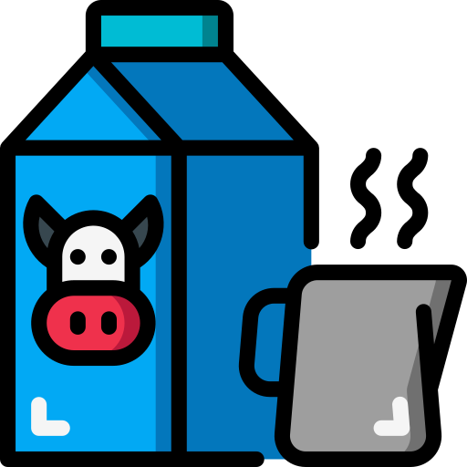

OBESITY
CHILDHOOD STATISTICS
CHILDHOOD STATISTICS
1 IN 3
children and adolescents{age 2-19}
ARE OVERWEIGHT OR OBESE
and almost NONE meet recommended healthy diet and physical activity amount

An estimated
12.5
MILLION
children(ages 5 years or younger), spend
33 HOURS/>WEEK
in child care settings and consume nearly all of their daily calories
An estimated
12.5
MILLION
children(ages 5 years or younger), spend
33 HOURS/>WEEK
in child care settings and consume nearly all of their daily calories
OBESITY IS LINKED TO MORE CHRONIC CONDITIONS THAN:


increasing the risk of more than 20 preventable diseases including sleep,apnea,asthma,heart disease,Type 2 diabetis,osteoarthiritis,high blood
pessure and high cholestrol stroke.
RISK FACTORS:
Children in their early teens who are obese and who have high triglyceride levels have arteries similar to those of 45-year olds.
Obese children as young as age 3 show indicators for developing heart disease later in life
Children who are overweight from the ages of 7 to 13 may develop heart disease as early as age 25
Obese children are twice as likely to die before age 55 than their slimmer peers.
Children in their early teens who are obese and who have high triglyceride levels have arteries similar to those of 45-year olds.
Obese children as young as age 3 show indicators for developing heart disease later in life
Children who are overweight from the ages of 7 to 13 may develop heart disease as early as age 25
Obese children are twice as likely to die before age 55 than their slimmer peers.
FRENCH FRIES
are the most common vegetable that children eat, comprising25%
of their vegetable intake

JUICE
(which may lack important fibre found in whole fruit) make up of40%
children's daily fruit intake.
40% - 50% OF TODDLERS
watch more television than is recommended
watch more television than is recommended
NEARLY 1/2 OF PRESCHOOLERS
don't get enough physical activity
don't get enough physical activity
 The cast of obesity in the United States is staggering totaling about
The cast of obesity in the United States is staggering totaling about
$147 BILLION
CHILDREN WHO EAT HEALTHY FOODS AND GET DAILY PHYSICAL ACTIVITY HAVE:
Fewer school absencesHigher academic achievement Higher
Higher self esteem
Fewer behavioural problems